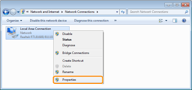
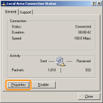
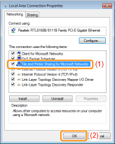

Before configuring the print server, check the settings of your network environment using the following procedure.
1
Perform the following procedure.

From the [Start] menu, select [Settings] → [Network and Dial-Up Connections].

From the [Start] menu, select [Control Panel], and then click [Network and Internet Connections] → [Network Connections].

From the [Start] menu, select [Control Panel], and then click [View network status and tasks] → [Manage network connections].


From the [Start] menu, select [Control Panel], and then click [View network status and tasks] → [Change adapter settings].

From the [Start] menu, select [Control Panel] → [Network Connections] → [Local Area Connection].

From the [Start] menu, select [Control Panel], double-click [Network and Sharing Center], and then click [Manage network connections].
2
Display the [Local Area Connection Properties] dialog box.
Right-click the [Local Area Connection] icon, then select [Properties] from the pop-up menu.

Click [Properties].

 If the [User Account Control] dialog box appears If the [User Account Control] dialog box appearsClick [Yes] or [Continue].
|
3
Make sure that [File and Printer Sharing for Microsoft Networks] is selected.
|
(1)
|
Make sure that the [File and Printer Sharing for Microsoft Networks] check box is selected.
(If the check box is not selected, select it.)
|
|
(2)
|
Click [OK].
|

|
NOTE
|
|
If you are using Windows XP
You cannot configure the print server with the operating system default settings (the settings immediately after installation).
Before configuring the print server, run [Network Setup Wizard] to enable the printer sharing settings.
For more details, see Windows Help.
|